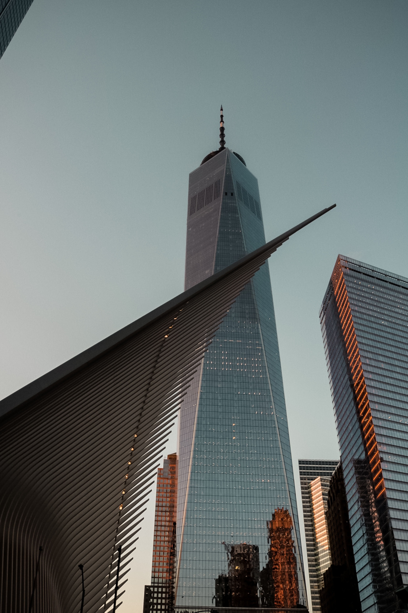

My name is Lars Stefan Forsmark and I was born in Borås, Sweden 1976. I quickly moved away from Borås to Uppsala along with my parents at the age of 2. I lived and studied in uppsala until I was 18 years old and moved to New York. I made myself a living in Newyork though I lived in a garbagecan for the first two years. I managed to surive on eating cigarette butts. I later managed to get myself an employment as a Shoe Machine Operators and my life slowly improved.
I am an entrepreneur and an optimist. I strive for success in everything I do no matter how bad the situation looks. My life goal is to become a wise and wealthy man with a lot of experiences from various different areas.
